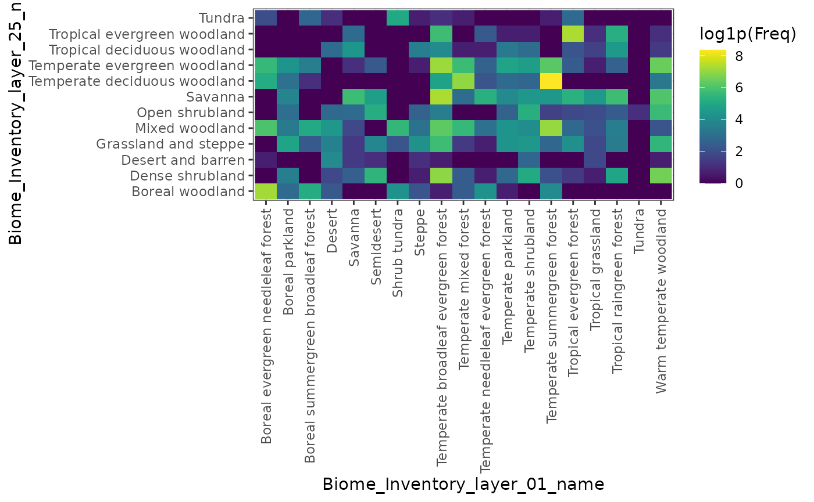
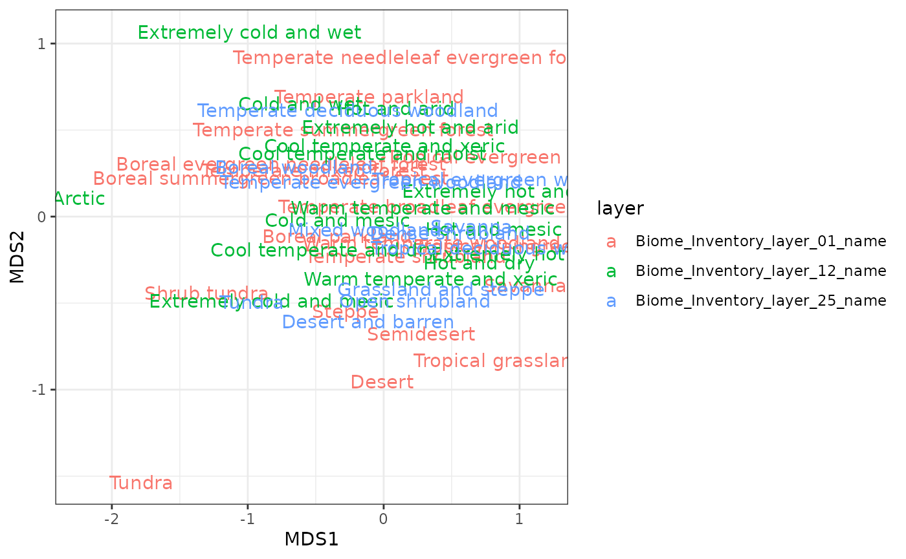

Compare biome definitions
compare_biome_definitions.Rmd
library(biomes)
#> Loading required package: terra
#> terra 1.9.27
library(ggplot2)
library(viridis)
#> Loading required package: viridisLite
library(dplyr)
#>
#> Attaching package: 'dplyr'
#> The following objects are masked from 'package:terra':
#>
#> intersect, union
#> The following objects are masked from 'package:stats':
#>
#> filter, lag
#> The following objects are masked from 'package:base':
#>
#> intersect, setdiff, setequal, union
library(tidyr)
#>
#> Attaching package: 'tidyr'
#> The following object is masked from 'package:terra':
#>
#> extractCompare biome definitions for a specific dataset
You may want to compare two biome definitions for a given occurrence dataset. For two definitions a tile plot based on the number of occurrences shows how biome classes overlap between the two schemes.
data(biomes_example)
layers <- biomes_get()
class <- biomes_classify(
x = biomes_example,
biome = layers[[c(1, 25)]]
)
#> Warning in biomes_classify(x = biomes_example, biome = layers[[c(1, 25)]]):
#> Coordinates provided as data.frame, assuming WGS84 as CRS
#> Warning: [extract] transforming vector data to the CRS of the raster
#> Classified 29104 record(s) against 2 biome layer(s):
#> - Biome_Inventory_layer_01 (Allen et al., 2020)
#> - Biome_Inventory_layer_25 (Ramankutty & Foley, 1999)
# class has one *_name column per layer
name_cols <- grep("_name$", names(class), value = TRUE)
tab <- as.data.frame(
table(class[[name_cols[1]]], class[[name_cols[2]]])
)
names(tab) <- c("biome_layer_1", "biome_layer_2", "Freq")
ggplot(tab) +
geom_raster(aes(x = biome_layer_1,
y = biome_layer_2,
fill = log1p(Freq))) +
scale_fill_viridis() +
labs(x = name_cols[1], y = name_cols[2]) +
theme_bw() +
theme(axis.text.x = element_text(angle = 90,
vjust = 0.5,
hjust = 1))
For comparing multiple biome definitions a multivariate ordination (e.g. NMDS) can help identify clusters of similar biomes across definitions.
library(vegan)
#> Loading required package: permute
class <- biomes_classify(
x = biomes_example,
biome = layers[[c(1, 12, 25)]]
)
#> Warning in biomes_classify(x = biomes_example, biome = layers[[c(1, 12, :
#> Coordinates provided as data.frame, assuming WGS84 as CRS
#> Warning: [extract] transforming vector data to the CRS of the raster
#> Classified 29104 record(s) against 3 biome layer(s):
#> - Biome_Inventory_layer_01 (Allen et al., 2020)
#> - Biome_Inventory_layer_12 (Metzger et al., 2013)
#> - Biome_Inventory_layer_25 (Ramankutty & Foley, 1999)
# number of occurrences per species per biome, wide format
test <- biomes_example |>
bind_cols(class) |>
select(species, ends_with("_name")) |>
pivot_longer(cols = ends_with("_name"),
names_to = "layer",
values_to = "biome") |>
group_by(layer, biome, species) |>
count() |>
pivot_wider(id_cols = c(biome, layer),
names_from = species,
values_from = n)
# prepare data for ordination
dat <- test[, -c(1:2)]
dat[is.na(dat)] <- 0
# ordination
ord <- metaMDS(dat, trace = FALSE)
plo <- data.frame(cbind(ord$points, test[, c(1, 2)]))
ggplot(plo, aes(x = MDS1, y = MDS2, label = biome, color = layer)) +
geom_text() +
theme_bw()
#> Warning: Removed 3 rows containing missing values or values outside the scale range
#> (`geom_text()`).